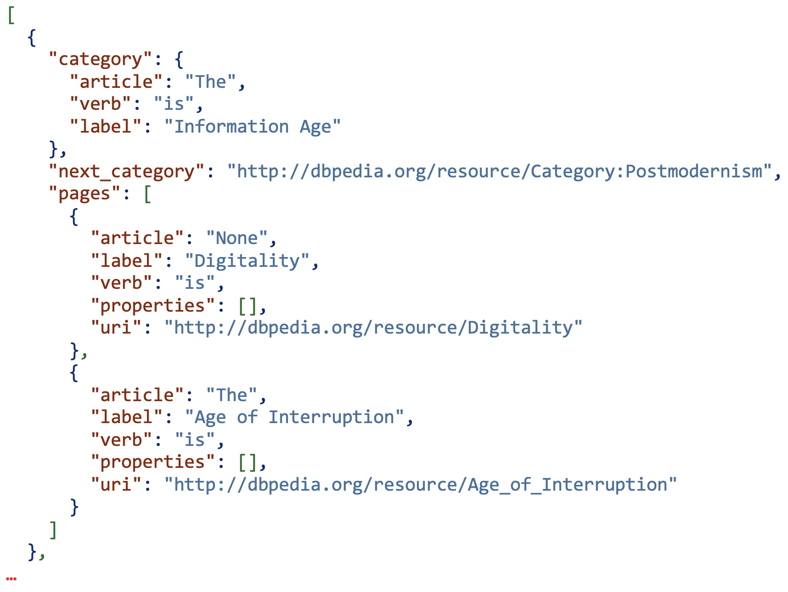
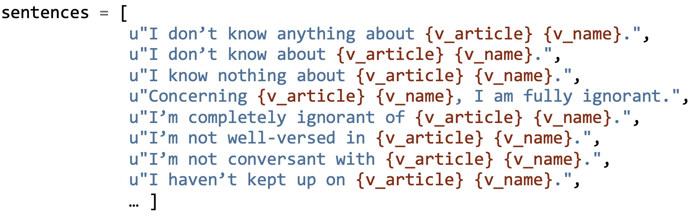

<!DOCTYPE html>
<html lang="en">
<head>
    <meta charset="utf-8" />
    <meta name="viewport" content="width=device-width, initial-scale=1.0, maximum-scale=1.0, user-scalable=no" />

    <title>Weichbrodt/Montfort</title>
    <link rel="stylesheet" href="dist/reset.css">
    <link rel="stylesheet" href="dist/reveal.css" />
    <link rel="stylesheet" href="css/slides-extended.css" />
    <link rel="stylesheet" href="dist/theme/white.css" id="theme" />
    <link rel="stylesheet" href="plugin/highlight/monokai.css" />
    <link rel="stylesheet" href="plugin/customcontrols/style.css">


    <link rel="stylesheet" href="./css/slides.css" />

    <script defer src="dist/fontawesome/all.min.js"></script>
    <script defer src="plugin/load-mathjax.js"></script>

    <script type="text/javascript">
        function pageInIframe() {
            return (window.location !== window.parent.location);
        }

        let forgetPop = true;
        function onPopState(event) {
            if(forgetPop){
                forgetPop = false;
            } else if( pageInIframe()) {
                parent.postMessage(event.target.location.href, "app://obsidian.md");
            }
        }
        window.onpopstate = onPopState;
        window.onmessage = event => {
            if(event.data == "reload"){
                window.document.location.reload();
            }
            forgetPop = true;
        }

        function fitElements() {
            const itemsToFit = document.getElementsByClassName('fitText');
            for (const item in itemsToFit) {
                if (Object.hasOwnProperty.call(itemsToFit, item)) {
                    const element = itemsToFit[item];
                    fitElement(element, 1, 1000);
                    element.classList.remove('fitText');
                }
            }
        }

        function fitElement(element, start, end) {

            let size = (end + start) / 2;
            element.style.fontSize = `${size}px`;

            if (Math.abs(start - end) < 1) {
                while (element.scrollHeight > element.offsetHeight) {
                    size--;
                    element.style.fontSize = `${size}px`;
                }
                return;
            }

            if (element.scrollHeight > element.offsetHeight) {
                fitElement(element, start, size);
            } else {
                fitElement(element, size, end);
            }
        }

        document.onreadystatechange = () => {
            fitElements();
            if (document.readyState === 'complete') {
                if (pageInIframe() && window.location.href.indexOf("?export") != -1){
                    parent.postMessage(event.target.location.href, "app://obsidian.md");
                }
                if (window.location.href.indexOf("print-pdf") != -1){
                    let stateCheck = setInterval(() => {
                        clearInterval(stateCheck);
                        window.print();
                    }, 250);
                }
            }
        };
    </script>
</head>

<body>
    <div class="reveal">
        <div class="slides"><section  data-markdown><script type="text/template"><!-- .slide: class="has-light-background drop" data-background-color="lightgrey" -->
<div class="" style="position: absolute; left: 0px; top: 0px; height: 1080px; width: 1920px; min-height: 1080px; display: flex; flex-direction: column; align-items: start; justify-content: center" absolute="true">

<div class="container">
<div style="position: absolute; width: 55%; height: 100%; bottom: 0; right: 0; background-image: url('./Resources/images/Goethe-mit-Smartphone.jpg'); background-size: cover; background-position: left; transform: scaleX(-1);"></div>
<div class="left-bottom-div" style="width: 65%"><div class="left-bottom-div" style="width: 90%; background-color: rgba(119, 47, 139, 1);">
<p class="slide-title-left" style="align-items: flex-end;">Autorschaft und digitale Literatur</p>
<p class="slide-title-left" style="align-items: flex-start; font-size: smaller;">Dr. habil. Joachim Harst<br>Allgemeine und Vergleichende Literaturwissenschaft<br>Universität des Saarlandes</p>
</div></div></div>
<div class="" style="color: white; transform-origin: left top; font-family: Impact; font-size: larger; padding: 5px; box-sizing: border-box; position: absolute; left: 45%; top: 86%; height: 10%; width: 55%; display: flex; flex-direction: column; align-items: start; justify-content: center" id="title">


4. Sitzung: Weichbrodt/Montfort

</div>
</div></script></section><section  data-markdown><script type="text/template"><!-- .slide: class="has-light-background drop" data-background-color="lightgrey" -->
<div class="" style="position: absolute; left: 0px; top: 0px; height: 1080px; width: 1920px; min-height: 1080px; display: flex; flex-direction: column; align-items: start; justify-content: center" absolute="true">

<div class="container">
<div class="right-bottom-div" style="width: 55%; height: 100%;"><p class="right-title-text" style="transform: rotate(-80deg) translate(-10%, 50%); transform-origin: left top;">3. Sequentielles Paradigma: Enzensberger</p>
<div class="right-top-div" style="width: 90%; background-image: url('https://www.boell.de/sites/default/files/styles/var_larger/public/uploads/2014/10/hme_poesiautomat.jpg.webp?itok=bzQzpUES'); background-size: cover; background-position: right;">

<div class="right-image-source"><a href="https://www.boell.de/de/2014/11/11/von-hans-magnus-enzensberger-lernen" title="»Der Poesieautomat von Hans Magnus Enzensberger in Landsberg« Abbildung: Fabienne Wassermann." target="_blank">Enzensbergers Poesieautomat.<i class="fas fa-external-link-alt link-icon"></i></a></div></div></div>


<div class="" style="position: absolute; left: 3%; top: 1%; height: 100%; width: 43%; display: flex; flex-direction: column; align-items: start; justify-content: center" >


## Ansatz zu einem digitalen Poesie-Automaten
- Datensatz initialisieren
- Verszeile kombinieren
- Verszeile ausgeben

</div>
</div></script></section><section  data-markdown><script type="text/template"><!-- .slide: class="has-light-background drop" data-background-color="lightgrey" -->
<div class="" style="position: absolute; left: 0px; top: 0px; height: 1080px; width: 1920px; min-height: 1080px; display: flex; flex-direction: column; align-items: start; justify-content: center" absolute="true">

<div class="container">
<div class="right-bottom-div" style="width: 55%; height: 100%;"><p class="right-title-text" style="transform: rotate(-80deg) translate(-10%, 50%); transform-origin: left top;">3. Sequentielles Paradigma: Weichbrodt</p>
<div class="right-top-div" style="width: 90%; background-image: url('./Resources/images/Weichbrodt-2014-cover.jpg'); background-size: contain; background-repeat: no-repeat; background-color: #772F8B; background-position: right;">

<div class="right-image-source"><a href="https://ggor.de/project/i-dont-know/" title="Weichbrodt, G. (2014). I Don’t Know. https://gregorweichbrodt.de/project/i-dont-know.html" target="_blank">Weichbrodt (2014).<i class="fas fa-external-link-alt link-icon"></i></a></div></div></div>


<div class="" style="position: absolute; left: 3%; top: 1%; height: 100%; width: 43%; display: flex; flex-direction: column; align-items: start; justify-content: center" >


## Weichbrodt: I Don’t Know
- Wie liest man so einen Text?
	- Konzept (Autor)
	- Quellcode (Umsetzung)
	- Vergleich (Gattung)

<div class="block">

Literaturhinweis: Harst, J. (2024). What the Heck is a Book? Code and Codex in Post-Digital Literature. In M. Bartelmus & A. Nebrig (Hrsg.), Digitale Schriftlichkeit: Programmieren, Prozessieren und Codieren Von Schrift (S. 149–169). transcript. https://doi.org/10.14361/9783839468135-007
</div>

<!-- .element: style="text-align: left; font-size: 0.6em; position: absolute; left: 5%; top: 70%; height: 30%; width: 90%; display: flex; flex-direction: column; align-items: start; justify-content: center" -->

</div>
</div></script></section><section  data-markdown><script type="text/template"><!-- .slide: class="has-light-background drop" data-background-color="lightgrey" -->
<div class="" style="position: absolute; left: 0px; top: 0px; height: 1080px; width: 1920px; min-height: 1080px; display: flex; flex-direction: column; align-items: start; justify-content: center" absolute="true">

<div class="container">
<div class="right-bottom-div" style="width: 55%; height: 100%;"><p class="right-title-text" style="transform: rotate(-80deg) translate(-10%, 50%); transform-origin: left top;">3. Sequentielles Paradigma: Weichbrodt</p>
<div class="right-top-div" style="width: 90%; background-image: url('./Resources/images/Weichbrodt-2014-cover.jpg'); background-size: contain; background-repeat: no-repeat; background-color: #772F8B; background-position: right;">

<div class="right-image-source"><a href="https://ggor.de/project/i-dont-know/" title="Weichbrodt, G. (2014). I Don’t Know. https://gregorweichbrodt.de/project/i-dont-know.html" target="_blank">Weichbrodt (2014).<i class="fas fa-external-link-alt link-icon"></i></a></div></div></div>


<div class="" style="position: absolute; left: 3%; top: 1%; height: 100%; width: 43%; display: flex; flex-direction: column; align-items: start; justify-content: center" >


## Konzept
- &shy;<!-- .element: class="fragment" data-fragment-index="1" -->digital verfügbares Wissen (Bsp. Wikipedia)
- &shy;<!-- .element: class="fragment" data-fragment-index="2" -->indirektes Wissen („Glauben”)
- &shy;<!-- .element: class="fragment" data-fragment-index="3" -->tatsächliches Nicht-Wissen
- &shy;<!-- .element: class="fragment" data-fragment-index="4" -->Gegenentwurf: selbstbewusste Ignoranz
- &shy;<!-- .element: class="fragment" data-fragment-index="5" -->information overflow und Buchform
</div>
</div></script></section><section  data-markdown><script type="text/template"><!-- .slide: class="has-light-background drop" data-background-color="lightgrey" -->
<div class="" style="position: absolute; left: 0px; top: 0px; height: 1080px; width: 1920px; min-height: 1080px; display: flex; flex-direction: column; align-items: start; justify-content: center" absolute="true">

<div class="container">
<div class="right-bottom-div" style="width: 55%; height: 100%;"><p class="right-title-text" style="transform: rotate(-80deg) translate(-10%, 50%); transform-origin: left top;">3. Sequentielles Paradigma: Weichbrodt</p>
<div class="right-top-div" style="width: 90%; background-image: url('./Resources/images/Weichbrodt-2014-cover.jpg'); background-size: contain; background-repeat: no-repeat; background-color: #772F8B; background-position: right;">

<div class="right-image-source"><a href="https://ggor.de/project/i-dont-know/" title="Weichbrodt, G. (2014). I Don’t Know. https://gregorweichbrodt.de/project/i-dont-know.html" target="_blank">Weichbrodt (2014).<i class="fas fa-external-link-alt link-icon"></i></a></div></div></div>


<div class="" style="position: absolute; left: 3%; top: 1%; height: 100%; width: 43%; display: flex; flex-direction: column; align-items: start; justify-content: center" >


## Durchführung
- Input: Wikipedia 
	- Ordnungsstrukturen (Kategorien) als Leitfaden
	- → inhaltlich verwandte Begriffe
	- semantische Einordnung (Ort, Person, tot/lebendig, …) 
- Output: 
	- Kombination von Input mit festgelegten Phrasen
	- Konzeption von Variationen (Verkettung von Sätzen, Fragesätze, Ausrufe)
</div>
</div></script></section><section  data-markdown><script type="text/template"><!-- .slide: class="drop" data-background-color="white" template="" -->
<div class="" style="position: absolute; left: 0px; top: 0px; height: 1080px; width: 1920px; min-height: 1080px; display: flex; flex-direction: column; align-items: start; justify-content: center" absolute="true">

## Durchführung
<iframe
    src="https://en.wikipedia.org/wiki/Literature#External_links"
    width="30%"
    height="100%"
    frameborder="0"
    scrolling="auto"
    allowfullscreen>
</iframe>

<div class="" style="position: absolute; left: 50%; top: 0%; height: 100%; width: 50%; display: flex; flex-direction: column; align-items: start; justify-content: center" >





</div>
</div></script></section><section  data-markdown><script type="text/template"><!-- .slide: class="has-light-background drop" data-background-color="lightgrey" -->
<div class="" style="position: absolute; left: 0px; top: 0px; height: 1080px; width: 1920px; min-height: 1080px; display: flex; flex-direction: column; align-items: start; justify-content: center" absolute="true">

<div class="container">
<div class="right-bottom-div" style="width: 55%; height: 100%;"><p class="right-title-text" style="transform: rotate(-80deg) translate(-10%, 50%); transform-origin: left top;">3. Sequentielles Paradigma: Weichbrodt</p>
<div class="right-top-div" style="width: 90%; background-image: url('./Resources/images/Weichbrodt-2014-cover.jpg'); background-size: contain; background-repeat: no-repeat; background-color: #772F8B; background-position: right;">

<div class="right-image-source"><a href="https://ggor.de/project/i-dont-know/" title="Weichbrodt, G. (2014). I Don’t Know. https://gregorweichbrodt.de/project/i-dont-know.html" target="_blank">Weichbrodt (2014).<i class="fas fa-external-link-alt link-icon"></i></a></div></div></div>


<div class="" style="position: absolute; left: 3%; top: 1%; height: 100%; width: 43%; display: flex; flex-direction: column; align-items: start; justify-content: center" >


## Rückbezug auf Autorschaft
- formatiertes Output
- Output
- Code
- Wikipedia (Menschen- und Maschinencode)
</div>
</div></script></section><section  data-markdown><script type="text/template"><!-- .slide: class="drop" data-background-color="white" template="" -->
<div class="" style="position: absolute; left: 0px; top: 0px; height: 1080px; width: 1920px; min-height: 1080px; display: flex; flex-direction: column; align-items: start; justify-content: center" absolute="true">

<iframe src="https://badquar.to/publications/hard_west_turn.html" style="border: none; width: 100%; height: 100%;"></iframe>
</div></script></section><section  data-markdown><script type="text/template"><!-- .slide: class="has-light-background drop" data-background-color="lightgrey" -->
<div class="" style="position: absolute; left: 0px; top: 0px; height: 1080px; width: 1920px; min-height: 1080px; display: flex; flex-direction: column; align-items: start; justify-content: center" absolute="true">

<div class="container">
<div class="right-bottom-div" style="width: 55%; height: 100%;"><p class="right-title-text" style="transform: rotate(-80deg) translate(-10%, 50%); transform-origin: left top;">4. Sequentielles Paradigma: Montfort</p>
<div class="right-top-div" style="width: 90%; background-image: url('https://badquar.to/images/hwt_2018_cover.png'); background-size: contain; background-repeat: no-repeat; background-color: #BAC4CB; background-position: right;">

<div class="right-image-source"><a href="https://badquar.to/publications/hard_west_turn.html" title="Montfort, N. (2018). Hard West Turn. badquar.to." target="_blank">Montfort (2018).<i class="fas fa-external-link-alt link-icon"></i></a></div></div></div>

<div class="" style="position: absolute; left: 3%; top: 1%; height: 100%; width: 43%; display: flex; flex-direction: column; align-items: start; justify-content: center" >


## Konzept
- Wikipedia: [Deadliest Mass Shootings](https://en.wikipedia.org/wiki/Mass_shootings_in_the_United_States#Deadliest_mass_shootings_since_1949)
- Road Trip, drei Teile
- zunehmend vereinfachte und fragmentierte Sprache
- Künstlerbuch, limitierte Edition, biblisches Motto
<aside class="notes"><ul>
<li><a href="https://badquar.to/publications/hard_west_turn.html">badquar.to</a></div>
</div></li>
</ul>
</aside></script></section><section ><section data-markdown><script type="text/template"><!-- .slide: class="has-light-background drop" data-background-color="lightgrey" -->
<div class="" style="position: absolute; left: 0px; top: 0px; height: 1080px; width: 1920px; min-height: 1080px; display: flex; flex-direction: column; align-items: start; justify-content: center" absolute="true">

<div class="container">
<div class="right-bottom-div" style="width: 55%; height: 100%;"><p class="right-title-text" style="transform: rotate(-80deg) translate(-10%, 50%); transform-origin: left top;">4. Sequentielles Paradigma: Montfort</p>
<div class="right-top-div" style="width: 90%; background-image: url('https://badquar.to/images/hwt_2018_cover.png'); background-size: contain; background-repeat: no-repeat; background-color: #BAC4CB; background-position: right;">

<div class="right-image-source"><a href="https://badquar.to/publications/hard_west_turn.html" title="Montfort, N. (2018). Hard West Turn. badquar.to." target="_blank">Montfort (2018).<i class="fas fa-external-link-alt link-icon"></i></a></div></div></div>

<div class="" style="position: absolute; left: 3%; top: 1%; height: 100%; width: 43%; display: flex; flex-direction: column; align-items: start; justify-content: center" >


## Durchführung
- Datensatz initialisieren
	- vorgegebene Phrasen `(declarations)`
	- Text einlesen (English & Simple English Wikipedia)
	- Text verarbeiten `(litanies)` und fragmentieren `(degenerate_litanies)`
- Absätze ausgeben

<aside class="notes"><ul>
<li>die vorgegebenen Phrasen stellen das narrative Gerüst her (Reise/Road Trip)</li>
<li>die Verarbeitung der Phrasen löscht Eigennamen (Personen, Orte) und stellt einfache Hauptsätze her</li>
<li>die Fragmentierung verkürzt Sätze und baut zufällige Wiederholungen ein</li>
</ul>
<h3 id="resources">Resources</h3>
<ul>
<li><a href="https://github.com/copilot/share/c067419c-4920-8852-a900-020ca4304191">copilot conversation</a></li>
<li><a href="https://github.com/jharst/hard_west_turn/blob/main/hard_west_turn.py">github Repo</a></li>
</ul>
</div>
</div></aside></script></section><section data-markdown><script type="text/template"><!-- .slide: class="has-light-background drop" template="" data-background-color="lightgrey" -->
<div class="" style="position: absolute; left: 0px; top: 0px; height: 1080px; width: 1920px; min-height: 1080px; display: flex; flex-direction: column; align-items: start; justify-content: center" absolute="true">

### Beispieldatensatz
```python
para_frames = [
'This man was given to thinking of events of national importance.',
'The man thought to himself a good deal.',
'Certain things resonated in the otherwise still mind of the man.',
'Without outward sign of it, the man sometimes had a swirl of thought.',
'The man did not escape the country or himself.',
'The man went to find something, not knowing what.',
'Some things were known with certainty.',
…]
```


<!-- begin::[@Montfort-2017.md] -->
### Fragmentierung der Sätze
```python
def add_to_degenerate(string):
    if ',' in string and re.findall(r'\(', string) == \
                         re.findall(r'\)', string):
        string = string.split(',')[0] + '.'
        if string[-3:] == 'm..': # Sentences ending "a.m.." and "p.m.."
            string = string[:-1]
        degenerate_litany.append(string)

for string in simple_litany:
    add_to_degenerate(string)
for string in litany:
    add_to_degenerate(string)
for string in degenerate_litany:
    if ' ' in string and len(string.split()) < 5 and \
                     ',' not in string and '(' not in string:
        degenerate_litany.append(string[:-1] + ', ' + string.lower())
```
<!-- end::[@Montfort-2017.md] -->
</div></script></section></section><section  data-markdown><script type="text/template"><!-- .slide: class="has-light-background drop" data-background-color="lightgrey" -->
<div class="" style="position: absolute; left: 0px; top: 0px; height: 1080px; width: 1920px; min-height: 1080px; display: flex; flex-direction: column; align-items: start; justify-content: center" absolute="true">

<div class="container">
<div class="right-bottom-div" style="width: 55%; height: 100%;"><p class="right-title-text" style="transform: rotate(-80deg) translate(-10%, 50%); transform-origin: left top;">4. Sequentielles Paradigma: Montfort</p>
<div class="right-top-div" style="width: 90%; background-image: url('https://badquar.to/images/hwt_2018_cover.png'); background-size: contain; background-repeat: no-repeat; background-color: #BAC4CB; background-position: right;">

<div class="right-image-source"><a href="https://badquar.to/publications/hard_west_turn.html" title="Montfort, N. (2018). Hard West Turn. badquar.to." target="_blank">Montfort (2018).<i class="fas fa-external-link-alt link-icon"></i></a></div></div></div>

<div class="" style="position: absolute; left: 3%; top: 1%; height: 100%; width: 43%; display: flex; flex-direction: column; align-items: start; justify-content: center" >


## Interpretation

<aside class="notes"><ul>
<li>Abschnitte aus den drei Teilen lesen</li>
<li>Verarbeitung von<ul>
<li>Informationen über die Ereignisse/Amokläufe</li>
<li>Erklärungsversuche (Psychologie)</li>
<li>Trauerarbeit (Memorials)</li>
<li>= soziales Geflecht</div>
</div></li>
</ul>
</li>
</ul>
</aside></script></section></div>
    </div>

    <script src="dist/reveal.js"></script>
    <script src="plugin/notes/notes.js"></script>
    <script src="plugin/markdown/markdown.js"></script>
    <script src="plugin/obsidian-markdown.js"></script>
    <script src="plugin/highlight/highlight.js"></script>

    <script src="plugin/zoom/zoom.js"></script>
    <script src="plugin/math/math.js"></script>
    <script src="plugin/mermaid/mermaid.js"></script>
    <script src="plugin/chart/chart.umd.js"></script>
    <script src="plugin/chart/plugin.js"></script>
    <script src="plugin/menu/menu.js"></script>
    <script src="plugin/customcontrols/plugin.js"></script>

    <script>
        function extend() {
            const target = {};
            for (let i = 0; i < arguments.length; i++) {
                const source = arguments[i];
                for (const key in source) {
                    if (source.hasOwnProperty(key)) {
                        target[key] = source[key];
                    }
                }
            }
            return target;
        }

        function isLight(color) {
            let hex = color.replace('#', '');

            // convert #fff => #ffffff
            if (hex.length == 3) {
                hex = `${hex[0]}${hex[0]}${hex[1]}${hex[1]}${hex[2]}${hex[2]}`;
            }

            const c_r = parseInt(hex.substr(0, 2), 16);
            const c_g = parseInt(hex.substr(2, 2), 16);
            const c_b = parseInt(hex.substr(4, 2), 16);
            const brightness = ((c_r * 299) + (c_g * 587) + (c_b * 114)) / 1000;
            return brightness > 155;
        }

        const bgColor = getComputedStyle(document.documentElement).getPropertyValue('--r-background-color').trim();

        if (isLight(bgColor)) {
            document.body.classList.add('has-light-background');
        } else {
            document.body.classList.add('has-dark-background');
        }

        // default options to init reveal.js
        const defaultOptions = {
            controls: true,
            progress: true,
            history: true,
            center: true,
            transition: 'default', // none/fade/slide/convex/concave/zoom
            plugins: [
                ObsidianMarkdown,
                RevealHighlight,
                RevealZoom,
                RevealNotes,
                RevealMath.MathJax3,
                RevealMermaid,
                RevealChart,
                RevealCustomControls,
                RevealMenu,
            ],
            allottedTime: 120 * 1000,
            mathjax3: {
                mathjax: 'plugin/math/mathjax/tex-chtml-full.js',
            },
            markdown: {
                gfm: true,
            },
            mermaid: {
                theme: isLight(bgColor) ? 'default' : 'dark',
            },
            customcontrols: {
                controls: [
                ]
            },
            menu: {
                loadIcons: false
            }
        };

        if ( pageInIframe() ) {
            defaultOptions.scrollActivationWidth = 5;
        }

        // options from URL query string
        const queryOptions = Reveal().getQueryHash() || {};

        const options = extend(defaultOptions, {"controls":true,"progress":true,"slideNumber":true,"center":false,"transition":"slide","transitionSpeed":"default","width":1920,"height":1080,"margin":0.04}, queryOptions);
    </script>

    <script>
      Reveal.initialize(options);
    </script>
    <!-- created with Slides Extended reveal.html template -->
</body>
</html>
